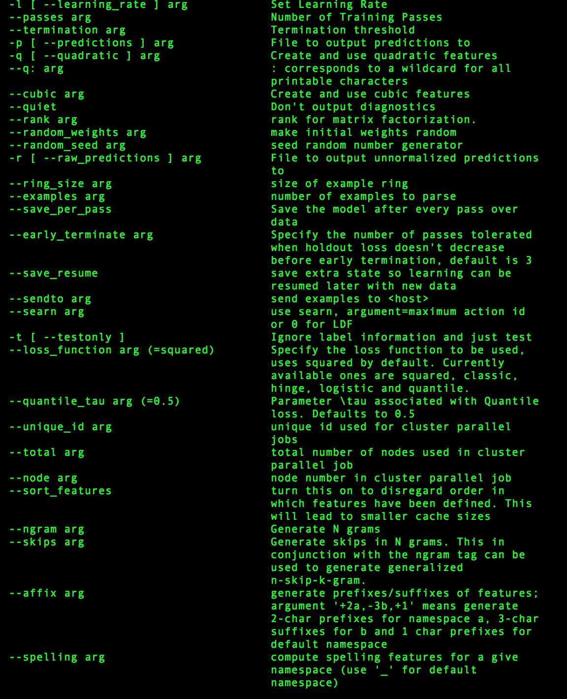

vowpal_wabbit: the redis of the data science community Tweet
by
vowpal_wabbit, or vw, is an online learning program originally built by
Yahoo! Research (now Microsoft Research)
. It's fairly basic to use, it's a command line tool and it's mostly written in
C++. Even the website has a great Web 1.0 feel to it.
Using vw basically maxes out your data science style points.
It's like not wearing a mask in hockey, or having lift tickets from 3 foreign
countries on your ski jacket. Yeah, it's that cool.

Fred Couples -- No glove. Red pants. Matching bag Gary Gaetti going sans-earflaps 17 years after it was made illegal
So it's cool, but what is it?
vw was designed with the following in mind:
- be fast, scalable, and efficient
- support new algorithms and ongoing research
- dead drop simple
I've always thought of vw as being a "data scientist's data scientist's tool".
It's one of those technologies where in order to get anything out of it you
have to know what you're doing. Just take a look at the man page.

You better know what you're getting into
Sort of like redis
It actually reminds me a lot of redis. redis is one of
those tools that never fails to get engineers excited. My take on it is that
it's so simple yet powerful that it's sort of a test of an engineer's true
skill.
I see the exact same sort of reaction from data scientists when talking about
vw. Finally! A chance to show off my math!
What's it look like?
So vw is basically a stdin / stdout cookie monster. You run it from the
shell and feed it a JSON-esque data structure and it pukes predictions back out
at you. Pretty? No. Simple and easy to use? You bet!
Installing vw requires you to use make. It'll blast through a bunch of C++
and leave you with the vw command. Just make sure you have the C++ boost lib
installed. You can run brew install --without-python boost if you're on OSX.
To install vw, follow along here.
Now there have been clients written in other programming languages
like vowpal_porpoise,
but the purist in me loves using vw in its true form.
Data
Since vw is an esoteric enough already, we're going to keep the dataset simple
by using our old friend iris. I just wrote a bash one-liner to write write it
to a csv.
$ Rscript -e "write.csv(iris, stdout(), row.names=F)" > iris.csv
To continue with the command line theme, I'm going to use awk, sed, cat,
and tail to clean my data. The format that vw takes is a little dated. It's
JSON-esque, but looks like this:
label | feature1: value feature2: value feature3: value ... featureN: value
$ tail -n+2 \
| sed 's/"virginica"/1/g' \
| sed 's/"setosa"/2/g' \
| sed 's/"versicolor"/3/g' > iris_numerical.csv
$ cat iris_numerical.csv | awk -F, '{ print($5 " |" "sepal_length:" $1 " speal_width:" $2 " petal_length:" $3 " petal_width:" $4)}' > iris.dat
$ head iris.dat
2 |sepal_length:5.1 speal_width:3.5 petal_length:1.4 petal_width:0.2
2 |sepal_length:4.9 speal_width:3 petal_length:1.4 petal_width:0.2
2 |sepal_length:4.7 speal_width:3.2 petal_length:1.3 petal_width:0.2
2 |sepal_length:4.6 speal_width:3.1 petal_length:1.5 petal_width:0.2
2 |sepal_length:5 speal_width:3.6 petal_length:1.4 petal_width:0.2
2 |sepal_length:5.4 speal_width:3.9 petal_length:1.7 petal_width:0.4
2 |sepal_length:4.6 speal_width:3.4 petal_length:1.4 petal_width:0.3
2 |sepal_length:5 speal_width:3.4 petal_length:1.5 petal_width:0.2
2 |sepal_length:4.4 speal_width:2.9 petal_length:1.4 petal_width:0.2
2 |sepal_length:4.9 speal_width:3.1 petal_length:1.5 petal_width:0.1
Ok so it's weird, but it's fast and it works and it's easy to follow! By using age old bash commands you're ensuring yourself of keeping out of the ongoing R vs Python War and just about anyone worth their salt can follow along.
Jerone Janssens is actually writing a book about doing data analysis from the command line. It looks like it should be good!
Training
is pretty straightforward. Give it some data with a label and vw will
start learning. There are a lot of configuration options for vw, including
things like neural networks, logistic regression, and stochastic gradient
descent. Configuration options are specified as command line arguments. For now,
we'll go with a fairly vanilla setting.
$ vw --oaa 3 # don't run this just yet!
--oaa 3 means we'll be doing one-against-all multiclass learning with 3
possible labels.
You have a couple of options for how you can use vw. One is to use good 'ole
stdin/stdout. Just puke your data to stdout and then let vw eat it all up (in
that regard I supposed it's sort of like a good dog).
$ cat iris.dat | vw --oaa 3
Num weight bits = 18
learning rate = 0.5
initial_t = 0
power_t = 0.5
using no cache
Reading datafile =
num sources = 1
average since example example current current current
loss last counter weight label predict features
0.333333 0.333333 3 3.0 2 2 4
0.166667 0.000000 6 6.0 2 2 4
0.090909 0.000000 11 11.0 2 2 4
0.045455 0.000000 22 22.0 2 2 4
0.022727 0.000000 44 44.0 2 2 4
0.045977 0.069767 87 87.0 3 3 4
finished run
number of examples per pass = 150
passes used = 1
weighted example sum = 150
weighted label sum = 0
average loss = 0.0466667
best constant = 0
total feature number = 600
You can also specify a data file using the -d argument.
$ vw --oaa 3 -d iris.dat
You also might find it handy to save your model so you can use it later. To do
that just specify a file using the -f argument. vw will save a binary file
that contains the data required to run your model.
$ vw --oaa 3 -d iris.dat -f iris.model
# yep, it's a binary!
$ cat iris.model
7.4.0m@@#
<И;�<���<)W1��;\���>
Making Predictions
So you can train a model on your data, but how do you make predictions? Well
that's pretty easy too. Just feed vw some more data and ask nicely using the
-p argument. If you'd like predictions to go to a file, just pass a filename.
If you just want to print them back out to the terminal, then pass it
/dev/stdout.
$ vw -d iris.dat -f iris.model -p iris.preds
$ vw -d iris.dat -f iris.model -p /dev/stdout
# the diagnostics can get a little annoying; use --quiet to supress them
$ vw -d iris.dat -f iris.model -p /dev/stdout --quiet
Mix in a little bashplotlib
I couldn't resist. I just had to get bashplotlib
into the mix.
$ vw -d iris.dat -f iris.model -p /dev/stdout --quiet | hist
Wrap Up
I have barely scratched the surface of what vw can do. I'll be the first one
to admit that I'm by no means an expert on the topic either!
vw has some really great online and adaptive learning methods as well. They
allow you to continuously train and make updates to your model, while also being
able to generate predictions. It's pretty cool stuff that I'll expand on in a
future post.
If you're looking for more vw resources, check these out: